IVR 2.0 — Use Case & Feature Tracker
All 13 use cases from the IVR routing design — from a user's point of view — with their current build status, the audio that plays at each step, and the feature-level completeness of every dependency. Click a use case to expand. Play the audio to hear what the user actually hears.
Calling from inside the app — in-app Call CTA, seamless bridge
A CSP user opens a ticket in the CSP App and taps the Call CTA to reach the customer. The dialer opens with the Wiom IVR Masked number pre-filled. The user dials, and the call is bridged seamlessly — no PIN prompt, no waiting. The customer's phone shows the Wiom IVR Masked number, never the CSP user's personal mobile.
What the user does and sees
- CSP user opens a Restore / Install / Pickup ticket card in the CSP App.
- Taps the Call CTA.
- Phone dialer opens with the Wiom IVR Masked number pre-filled.
- Taps dial.
- Customer's phone shows the call coming from the Wiom IVR Masked number — not from the CSP user's personal mobile.
Scenarios — and how each is handled
sim_inventory). Continues as UC 03 or UC 04. No user-visible failure.
Behind the scenes — tech detail
- Exotel App Bazaar Flow ✓
- API 1 (Table 1 fetch) ✓
- API 4 / Webhook (call logging) ✓
- CSP App integrations ✓
- Remote Config kill switch ✓
A customer opens their ticket in the Customer App and taps the Call CTA to reach the CSP user. Bridged seamlessly. The CSP user's phone shows the Wiom IVR Masked number, never the customer's personal mobile.
What the user does and sees
- Customer opens their ticket card in the Customer App.
- Taps the Call CTA.
- Phone dialer opens with the Wiom IVR Masked number pre-filled.
- Taps dial.
- CSP user's phone shows the call coming from the Wiom IVR Masked number — not from the customer's personal mobile.
Scenarios — and how each is handled
Behind the scenes — tech detail
- Exotel App Bazaar Flow ✓
- API 1 ✓ · API 4 webhook ✓
- Customer App integrations ✓ · Remote Config ✓
- Dialer auto-open (Customer App) — In Progress (UX nicety)
Calling from the dialer — caller identified — Wiom recognises the caller's mobile
CSP dials back on a CSP-initiated masked number — the original call was made from CSP App
A CSP user previously called a customer via the in-app CTA. Later they want to re-call — they tap the saved Wiom IVR Masked number in their phone's call log. The IVR recognises the CSP, finds exactly one active ticket for them, and bridges directly to the customer. No PIN prompt.
What the user does and sees
- CSP user opens their phone's call log.
- Taps the saved Wiom IVR Masked number to dial.
- Customer's phone rings showing the Wiom IVR Masked number.
Scenarios — and how each is handled
Behind the scenes — tech detail
- API 1 ✓ · API 2 (user identification) ✓ · API 4 webhook ✓
- Identification: caller's mobile found in
sim_inventory→ IVR knows it's this CSP → finds 1 active ticket.
A CSP user has 2+ open tickets and wants to call one of those customers back. They tap the saved Wiom IVR Masked number in their call log. The IVR recognises them but can't tell which customer they want — so it asks for the 6-digit PIN. The CSP reads the PIN from the relevant ticket card in the CSP App (or the SMS), enters it, and the bridge fires.
What the user does and sees
- CSP user taps the saved Wiom IVR Masked number in their call log.
- "Please enter your PIN" voice prompt.
- Looks up the ticket in the CSP App (or the SMS) to find the 6-digit PIN.
- Enters the PIN on the dialer keypad.
- Customer's phone rings showing the Wiom IVR Masked number.
Scenarios — and how each is handled
Behind the scenes — tech detail
- API 1 ✓ · API 2 ✓ · API 3 (PIN lookup) ✓ · API 4 ✓
- PIN visible on CSP App ticket card ✓
- All Recorded Voices ✓
CSP dials back on a customer-initiated masked number — the customer called the CSP first, CSP missed it
A customer rang the CSP earlier (UC 02), but the CSP missed it. The CSP sees a missed call notification on the CSP App and dials back from their call log. IVR recognises the CSP, finds 1 active ticket, and bridges directly to the customer.
What the user does and sees
- CSP gets a missed-call push notification on the CSP App with the text:
आपने कनेक्शन का कॉल मिस कर दिया। कृपया वापस कॉल करें।
- Taps the notification or opens the phone's call log and taps the Wiom IVR Masked number.
- Customer's phone rings showing the Wiom IVR Masked number.
Scenarios — and how each is handled
Behind the scenes — tech detail
- API 1 ✓ · API 2 ✓ · API 4 ✓
- Missed-call PN to CSP ✓ (drives this callback path)
Same as UC 05 (CSP dialing back a customer's missed call) but the CSP has 2+ open tickets. IVR asks for the PIN to disambiguate which customer they want to reach.
What the user does and sees
- CSP gets a missed-call push notification on the CSP App.
- Taps the notification or opens phone's call log; dials the Wiom IVR Masked number.
- "Please enter your PIN" voice prompt.
- Looks up the relevant ticket in the CSP App (or the SMS) to find the 6-digit PIN; enters it.
- Customer's phone rings.
Scenarios — and how each is handled
Behind the scenes — tech detail
- API 1 ✓ · API 2 ✓ · API 3 ✓ · API 4 ✓ · Recorded voices ✓
- PIN visible on CSP App ✓ · PIN SMS to CSP ✓
- Missed-call PN to CSP ✓
Customer dials back on a customer-initiated masked number — customer is re-calling about the same ticket they called earlier
A customer called the CSP earlier (UC 02) and now wants to call again about the same ticket. They redial the saved Wiom IVR Masked number from their call log. The IVR recognises them and finds 1 active ticket — direct bridge.
What the user does and sees
- Customer opens their phone's call log.
- Taps the saved Wiom IVR Masked number to dial.
- CSP user's phone rings showing the Wiom IVR Masked number.
Scenarios — and how each is handled
Behind the scenes — tech detail
- API 1 ✓ · API 2 ✓ · API 4 ✓
- Identification: caller's mobile not in sim_inventory but found in Customer API → IVR knows it's this customer → finds 1 active ticket.
Customer has 2+ open tickets (e.g. Restore + Pickup) and dials back. IVR asks for the PIN to disambiguate which ticket they want.
What the user does and sees
- Customer redials the Wiom IVR Masked number from their call log.
- "Please enter your PIN" voice prompt.
- Reads the PIN from the SMS or from the relevant ticket card in the Customer App; enters it.
- CSP user's phone rings.
Scenarios — and how each is handled
Behind the scenes — tech detail
- API 1 ✓ · API 2 ✓ · API 3 ✓ · API 4 ✓ · Recorded voices ✓
- PIN SMS to customer ✓ · PIN visible on Customer App ✓
Customer dials back on a CSP-initiated masked number — the CSP called first, customer missed it
CSP tried to call the customer (UC 01) but the customer missed it. Customer gets a missed-call notification on the Customer App and dials back. IVR recognises the customer, finds 1 active ticket, and bridges directly to the CSP.
What the user does and sees
- Customer gets a missed-call push notification on the Customer App with the text:
आपने हमारे टीम का कॉल मिस कर दिया है। कृपया उनसे बात करने के लिए वापस कॉल करें।
- Taps the notification or opens the phone's call log and taps the Wiom IVR Masked number.
- CSP user's phone rings showing the Wiom IVR Masked number.
Scenarios — and how each is handled
Behind the scenes — tech detail
- API 1 ✓ · API 2 ✓ · API 4 ✓
- Missed-call PN to Customer ✓ Live
Customer has 2+ open tickets and dials back after missing the CSP's call. IVR asks for the PIN to disambiguate which ticket they want.
What the user does and sees
- Customer gets a missed-call push notification on the Customer App.
- Taps the notification or opens phone's call log; dials the Wiom IVR Masked number.
- "Please enter your PIN" voice prompt.
- Reads the PIN from the SMS or Customer App; enters it.
- CSP user's phone rings.
Scenarios — and how each is handled
Behind the scenes — tech detail
- API 1 ✓ · API 2 ✓ · API 3 ✓ · API 4 ✓ · Recorded voices ✓
- PIN SMS to customer ✓ · PIN visible on Customer App ✓
- Missed-call PN to Customer ✓ Live
Calling from the dialer — caller not identified — FROM is from an unregistered SIM
A customer borrows a relative's phone (own phone is unreachable). The masked number and PIN are on the SMS they received at ticket creation. They dial the masked number, hear the PIN prompt, enter the PIN from their SMS, and the call bridges to the CSP.
What the user does and sees
- Customer (on a borrowed phone) dials the Wiom IVR Masked number from their SMS.
- "Please enter your PIN" voice prompt.
- Reads the PIN from the SMS on their own phone; enters it on the borrowed phone's keypad.
- CSP user's phone rings.
Scenarios — and how each is handled
Behind the scenes — tech detail
- API 1 ✓ · API 2 ✓ · API 3 ✓ · API 4 ✓ · Recorded voices ✓
- PIN SMS to customer ✓ (load-bearing — customer can't proceed without the SMS)
A CSP user is on a different SIM (own SIM out of battery, signal issues). They dial the masked number from the unregistered SIM. IVR doesn't recognise the number, asks for the PIN. CSP reads the PIN from the CSP App ticket card or the SMS, enters it.
What the user does and sees
- CSP user dials the Wiom IVR Masked number from the unregistered SIM.
- "Please enter your PIN" voice prompt.
- Looks up the PIN on the CSP App (on their primary phone) or from the SMS; enters it.
- Customer's phone rings.
Scenarios — and how each is handled
Behind the scenes — tech detail
- API 1 ✓ · API 2 ✓ · API 3 ✓ · API 4 ✓ · Recorded voices ✓
- PIN visible on CSP App ✓ · PIN SMS to CSP ✓
A CSP user can't take the call (signal, busy, away). They forward the SMS (which carries the PIN, ticket type, and ticket ID) to a colleague. The colleague dials the masked number from their own phone. IVR doesn't recognise the colleague's number, asks for the PIN. Colleague enters the PIN from the forwarded SMS.
What the user does and sees
- CSP user forwards the Wiom PIN SMS (or a screenshot of the ticket card) to a colleague over WhatsApp / SMS.
- Colleague receives the forward and dials the Wiom IVR Masked number from their own phone.
- "Please enter your PIN" voice prompt.
- Colleague reads the PIN from the forwarded SMS and enters it.
- Customer's phone rings.
Scenarios — and how each is handled
Behind the scenes — tech detail
- API 1 ✓ · API 2 ✓ · API 3 ✓ · API 4 ✓ · Recorded voices ✓
- PIN visible on CSP App ✓ · PIN SMS to CSP ✓
- The SMS itself carries PIN + ticket type + ticket ID, making it the natural artefact to forward.
Edge cases — No active ticket on the IVR Masked number — dead-end with redirect
When a customer or CSP dials the IVR Masked number but the IVR finds no active ticket against their mobile (e.g. ticket already closed), the IVR plays a dedicated message that politely tells them where to call instead — the Wiom Call Center for customers, the Trustline 7836811111 for CSPs — and ends the call. No bridge is attempted.
A CSP user dials the IVR Masked number, but the IVR finds no active ticket against their mobile (most likely the last ticket has already closed). The IVR plays the partner-side dead-end message telling them to call the Trustline 7836811111 instead, and ends the call.
What the user does and sees
- CSP user dials the Wiom IVR Masked number.
- "You have no active ticket. Please call the Trustline at 7836811111."
- Call ends.
Scenarios — and how each is handled
7836811111) and the call ends. No bridge attempted.Behind the scenes — tech detail
- Recorded voice:
No active ticket — CSP / Partner✓ Live - Plays on the IVR Masked number when the identification chain recognises the caller as a CSP but finds zero active tickets for them.
A customer dials the IVR Masked number, but the IVR finds no active ticket against their mobile. The IVR plays the customer-side dead-end message telling them to call the Wiom Call Center instead, and ends the call.
What the user does and sees
- Customer dials the Wiom IVR Masked number.
- "You have no active ticket. Please call the Wiom Call Center."
- Call ends.
Scenarios — and how each is handled
Behind the scenes — tech detail
- Recorded voice:
No active ticket — Customer✓ Live - Plays on the IVR Masked number when the identification chain recognises the caller as a customer but finds zero active tickets for them.
Per-feature build status sourced from the IVR Completeness task list. The use-case-level statuses in the previous tab are derived from this table.
| Task | Description | Platform | Status | Notes |
|---|---|---|---|---|
| Exotel App Bazaar Flow | End-to-end App Bazaar call flow | Exotel | Completed | — |
| API 1 | Table 1 lookup at inbound call | IVR Service | Completed | — |
| API 2 | User identification chain: sim_inventory (returns user_id) → Customer API (returns customer_id) → Booking API (returns account_id) | IVR Service | Completed | Customer API deserialization fix landed 24 Jun |
| API 3 | Table 2 PIN-to-counterparty lookup | IVR Service | Completed | — |
| API 4 / Webhook | Call disposition logging | IVR Service | Completed | — |
| Customer App integration | Initiate-call from all three services + masked number on dialer | Customer App | Completed | — |
| CSP App integration | Initiate-call from all three services + masked number on dialer | CSP / Technician App | Completed | — |
| Remote Config kill switch | Customer App + CSP App | Both apps | Completed | — |
| All Recorded Voices | Voice prompts played by IVR (ask-PIN, wrong PIN, limit reached, no PIN, no active ticket, call not picked) | Exotel | Completed | List shared |
| PIN Communication — PIN on Customer App | PIN visible on Customer App ticket card | Customer App | Completed | — |
| PIN Communication — PIN on CSP App | PIN visible on CSP App ticket card | CSP / Technician App | Completed | — |
| PIN Communication — SMS to Customer | SMS trigger to customer with PIN | SMS | Completed | — |
| PIN Communication — SMS to CSP | SMS trigger to CSP with PIN, ticket type, and ticket ID | SMS | Completed | Live — carries csp_pin + ticket_type + execution_candidate_id. |
| DLT Whitelisting | Wiom number whitelisted on DLT | SMS / Compliance | In Progress | Maanas to sign Number Ownership contract; ETA TBD |
| Missed-call PN to CSP | PN to CSP when customer's call wasn't picked | CSP App | Completed | Earlier bug fixed — event was missing on CSP CT |
| Missed-call PN to Customer | PN to customer when CSP's call wasn't picked | Customer App | Completed | Trigger fires and PN lands on customer devices. End-to-end working. |
| Bug — PIN deallocation on P74 | PIN not getting deallocated when booking removed after P74 hit | IVR Service | Fixed 24 Jun | issues/807 |
| Bug — Registered Number change | SIM Inventory not updating on number change | IVR Service | Fixed 24 Jun | issues/807 |
| Bug — 12 single-ticket cases not bridging | Customer Service deserialization failure ("Active" String vs int) | IVR Service | Fixed 24 Jun | issues/846 |
| Bug — call_dnp_missed_call_alert event | Event not getting triggered | IVR Service | Fixed 24 Jun | issues/830 |
| Dialer Open | Directly open the dialer on Call CTA tap (one fewer step) | Customer App | In Progress | UX improvement, not functional gating |
All seven voice prompts the IVR can play on a call. Hit play on any clip to hear what the user actually hears.
7836811111).Out-of-call messages — push notifications fired after a missed call, and SMS sent on ticket creation. These are the discovery / authentication channels that feed the dial-back and unknown-caller use cases.
Push notifications — missed call alerts
CSP missed-call notification ✓ Live
Customer missed-call notification ✓ Live
SMS — PIN delivery on ticket creation
Customer PIN-sharing SMS ✓ Live
यदि आप रजिस्टर्ड नंबर के अलावा किसी अन्य नंबर से कॉल करते हैं, तो IVR में {{ Event.customer_pin }} दर्ज करके सत्यापन करें।
Issue Type: {{ Event.ticket_type }}
- Wiom
Variables:
customer_pin = the customer's 6-digit PIN · ticket_type = Install / Restore / Pickup.CSP PIN-sharing SMS ✓ Live
यदि आप रजिस्टर्ड नंबर के अलावा किसी अन्य नंबर से कॉल करते हैं, तो IVR में {{ Event.csp_pin }} दर्ज करके बात करें।
Issue Type: {{ Event.ticket_type }}
Ticket ID: {{ Event.execution_candidate_id }}
- Wiom
Variables:
csp_pin = the CSP-side 6-digit PIN · ticket_type = Install / Restore / Pickup · execution_candidate_id = the unique ticket identifier.